GIF-4105/7105 · Rapport de Tadagbé Dhossou
Ce travail porte sur la métamorphose d’images à l’aide de correspondances de points. L’objectif principal était de produire une séquence vidéo transformant progressivement une image vers une autre, puis d’appliquer la même approche à plusieurs autres paires d’images.
L’approche utilisée repose sur trois idées principales : la sélection de points correspondants, une triangulation de Delaunay calculée sur la moyenne des points, puis un morphing triangle par triangle à l’aide de transformations affines et d’un fondu progressif des couleurs.
Dans ce rapport, je présente d’abord l’algorithme utilisé, puis la vidéo principale demandée par l’énoncé, suivie de trois animations supplémentaires et d’une discussion sur la qualité des résultats.
Les points d’intérêt ont été définis manuellement sur les deux images. Ils incluent les principales structures du visage, notamment le contour, les yeux, les sourcils, le nez, la bouche ainsi que des points sur les bordures de l’image afin de mieux contrôler l’arrière-plan.
Une triangulation de Delaunay a été calculée sur la moyenne des deux ensembles de points. Cette triangulation est conservée fixe pendant toute la séquence afin d’éviter les changements abrupts de structure entre les trames.
Pour une trame donnée, une forme intermédiaire est obtenue par interpolation linéaire des points de contrôle. Ensuite, pour chaque triangle, une transformation affine est calculée entre le triangle intermédiaire et les triangles correspondants dans les deux images source.
Le remplissage de l’image intermédiaire est effectué par transformation inverse : pour chaque pixel situé dans un triangle de l’image intermédiaire, on remonte vers sa position dans chaque image source, on interpole sa couleur, puis on combine les deux couleurs selon un facteur de fondu.
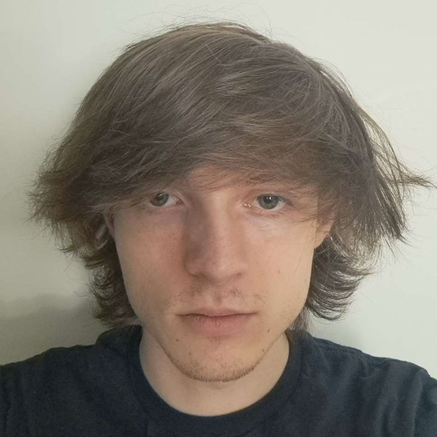
Image source 1
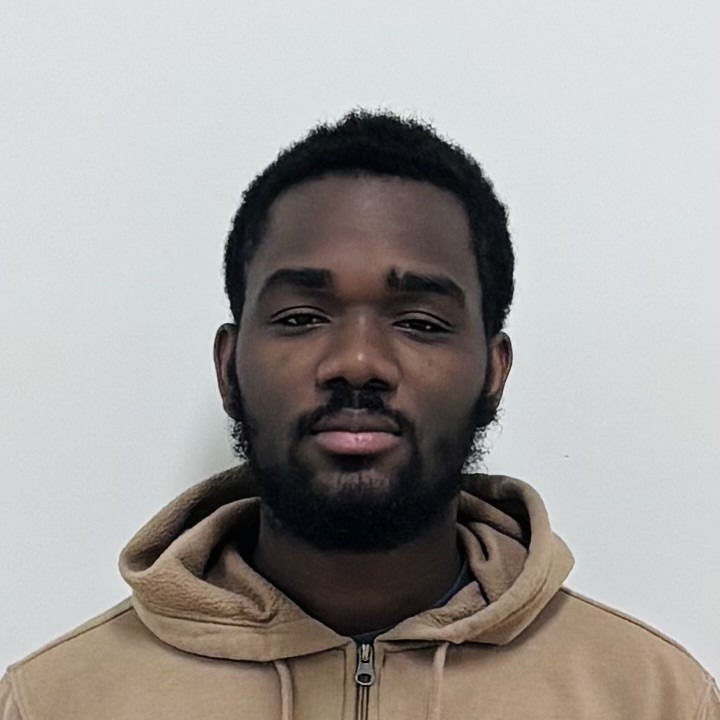
Image source 2
Le résultat obtenu est globalement convaincant, surtout dans les régions où les points de correspondance étaient bien alignés. La structure générale du visage évolue de manière progressive et la transition de couleur reste fluide.
Les artefacts les plus visibles apparaissent surtout autour des cheveux, du contour du visage . Cela est normal vu que mon collegue a des cheveux longs et moi j'ai des cheveux courts présentent des différences de pose, d’éclairage ou d’expression.
L’ajout de points sur les bordures de l’image a permis de mieux contrôler l’arrière-plan et de limiter certains étirements excessifs à l’extérieur du visage. Pour cette paire d’images, le rendu est convaincant, puisque les deux images représentent le même type de contenu, à savoir des visages.
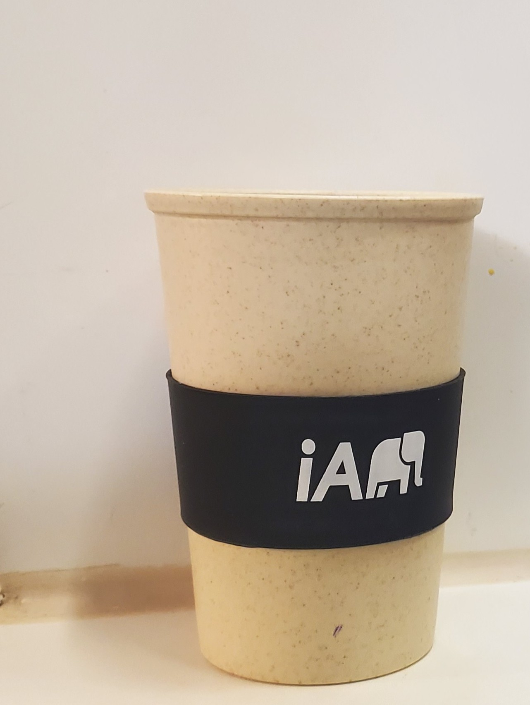
Tasse 1
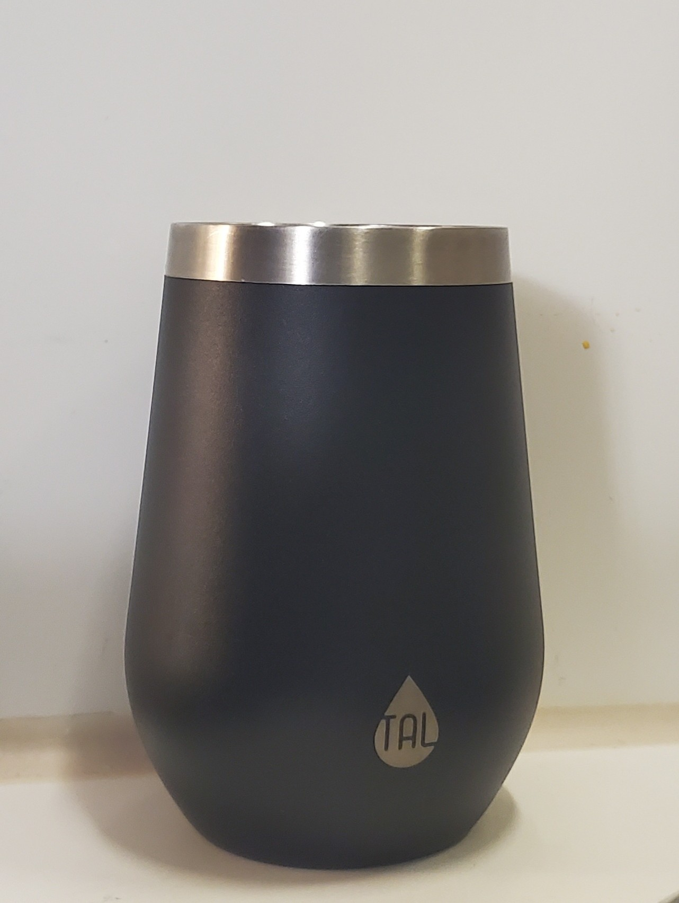
Tasse 2
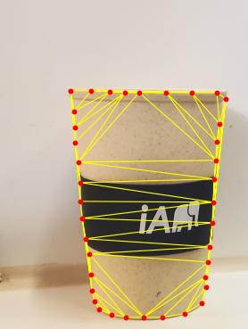
Triangulation sur la tasse 1
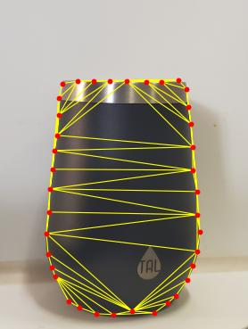
Triangulation sur la tasse 2
Cette animation illustre l’application de la même méthode à des objets, en l’occurrence deux tasses d’eau. Le rendu est presque parfait, ce qui s’explique par le fait que les deux images présentent des structures très similaires. Le principal problème rencontré dans ce cas est la lenteur de l’algorithme : malgré l’utilisation d’environ 38 points autour de chaque objet, le temps de calcul est resté relativement élevé. Cela s’explique notamment par la résolution élevée des images, qui ont été prises avec mon téléphone et mesurent environ 1282 × 1704 pixels.
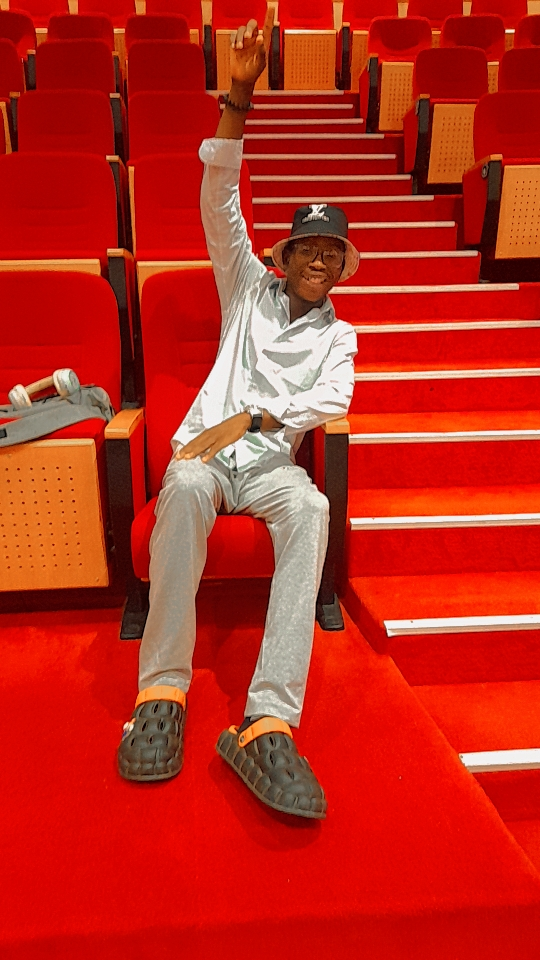
Photo de Vianney
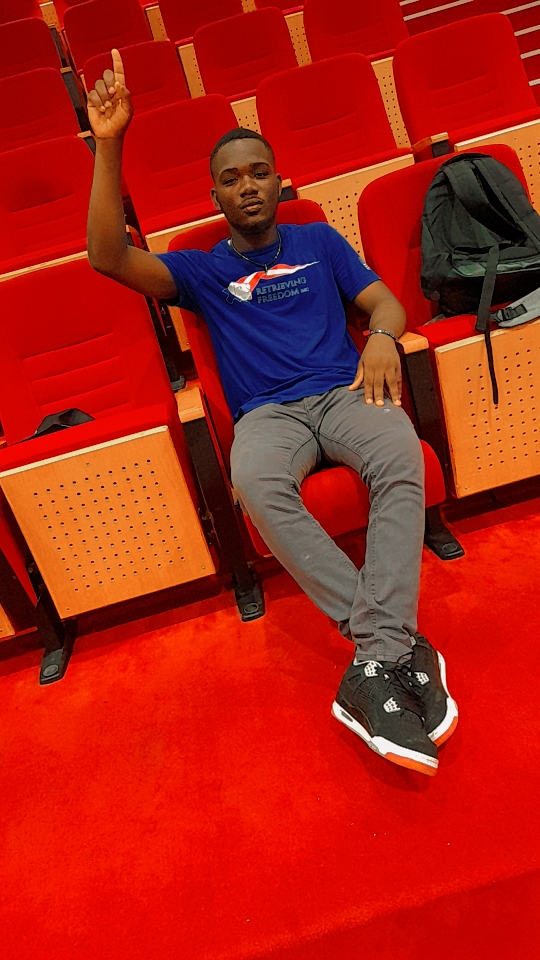
Ma photo
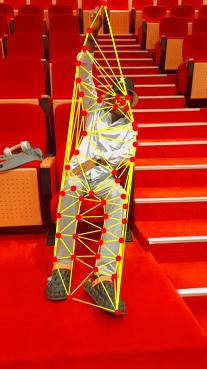
Triangulation sur l’image de Vianney
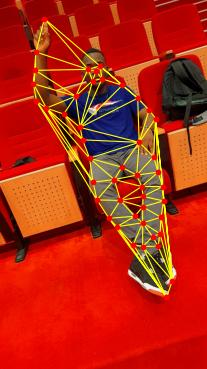
Triangulation sur ma photo
Cette animation n’est pas parfaite, mais le résultat reste tout de même intéressant. En observant les triangles obtenus, on remarque qu’une rotation importante est nécessaire pour passer d’une image à l’autre. Cela se ressent dans la vidéo par un léger effet de tourbillon lors de la transition. Un autre facteur qui influence la qualité du rendu est que les deux photos ont été prises dans la même salle, mais à des endroits différents. Par exemple, un sac apparaît à côté de moi sur l’une des images alors qu’il n’est pas présent sur l’autre. Cela crée une certaine incohérence dans la transition. Enfin, l’arrière-plan n’est pas parfaitement blanc ni uniforme, ce qui affecte également la qualité visuelle du morphing.
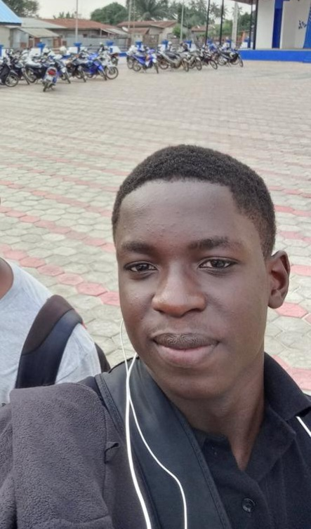
Photo de Jospin
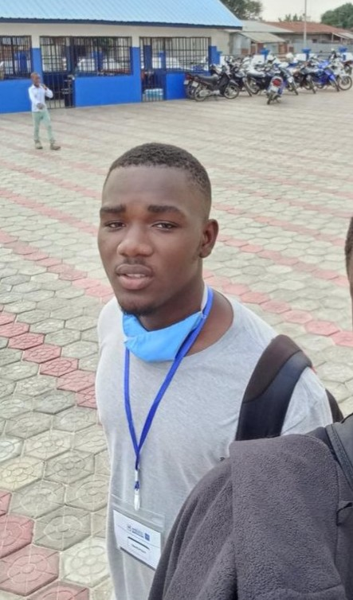
Ma photo
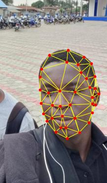
Triangulation sur l’image de Jospin
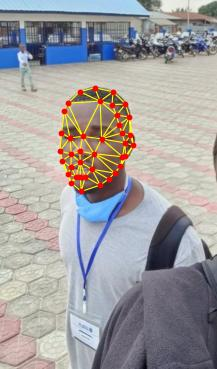
Triangulation sur ma photo
Cette animation correspond à un morphing de visage. La particularité de cet exemple est que les deux images sources proviennent d’une seule et même image de départ. L’image originale utilisée est montrée ci-dessous.
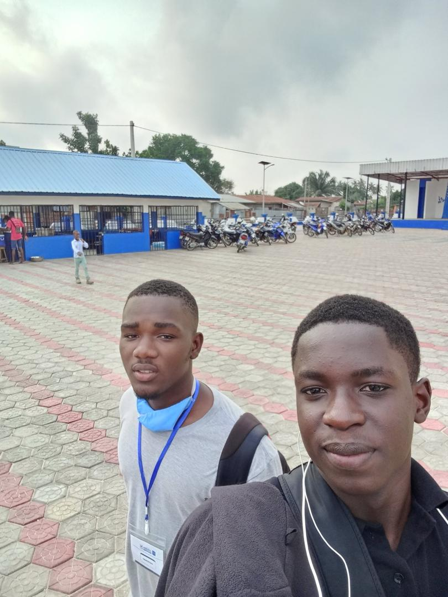